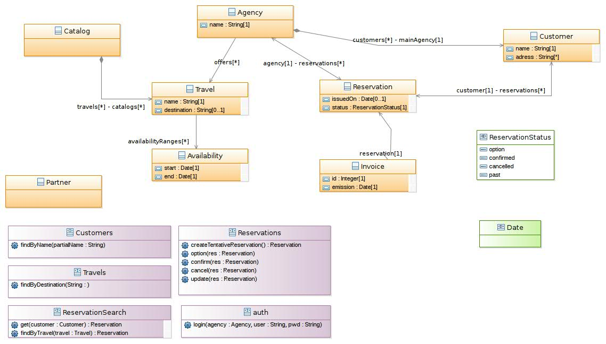

© Obeo 2011 - All rights reserved. This program and the accompanying materials are made available under the terms of the Eclipse Public License v1.0
Authors Cédric Brun / Yvan LussaudContact cedric.brun@obeo.fr / yvan.lussaud@obeo.fr

It might happen that for some reason you have an Association instance in your package which doesn’t have the proper ends. In that case
the class diagram will show the broken associations as nodes :
You can use the Association tools in the palette (Association, Reference, Composition and Aggregation) to re-attach the Association to a classifier.
You have two ways to highlight classes related to one given class. The first one is to activate the Related filter on the Class Diagram. It will hide elements (Class, interface, Association, ...) that are not related to the class you selected (context). The second way can be achive by using the Related Classes Diagram. This diagram will show all elements related to the selected class.
Lets use an instance to visualize the result of each methods. Consider the following model :

By opening the Class Diagram on package1 you get the following diagram :

You can then apply the filter on ContextClass :

The resulting diagram will be as follow :

Notice that only classes present in the initial diagram are present. If you want all classes related to ContextClass you should open the Related Classes Diagram on the ContextClass :

A Class Diagram created on a Package or a Model will display the contained classes but also the classes which are contained in Components of the selected Package.
Thanks to this one can easily define a Class Diagram displaying all the entities abstracting the fact that they might be split across components.

You can link two ports using assembly or delegation connectors.
Assembly Connector :

Delegation Connector :


As a component :

In a component :

Using ports :

Or directy on the components :


The Use Case Diagram will display any UseCase not being affected to a subject on the canvas. If a subject is affected, then the use case
will be displayed directly within this subject.
Dragging a use case from a subject to the canvas (and the other way around) will set or unset the subject accordingly.